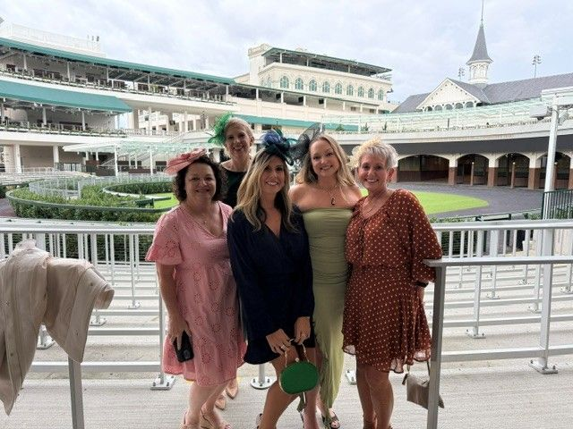
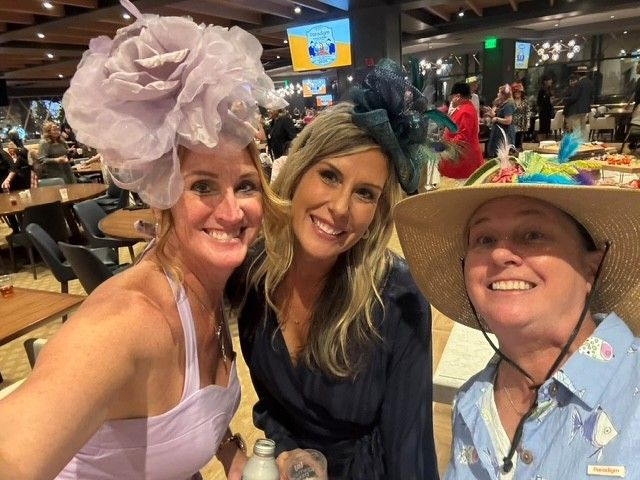

Catastrophic Injury
Case Management
Thoughtful coordination for complex, life-altering injuries, including brain, spinal cord, burn, and amputation injuries.
Discuss a case →Catastrophic Injury Case Management
Clinical expertise and compassionate case management for complex and catastrophic workplace injuries.
How we help
We provide individualized, nurse-led case management to help injured workers and their support networks navigate complex care with clarity and confidence.
Thoughtful coordination for complex, life-altering injuries, including brain, spinal cord, burn, and amputation injuries.
Discuss a case →Help navigating medical appointments, treatment recommendations, rehabilitation, equipment, and ongoing care needs.
Learn about our approach →Clear communication and practical guidance for employers, insurance carriers, and the professionals involved in recovery.
Connect with our team →A collaborative approach
When a serious injury occurs, its impact reaches beyond one person. Upshot works alongside the people and professionals involved to help make the care journey more informed, coordinated, and person-centered.
We never know what path life will take us on. We believe the right support can help people find their way forward.
THE UPSHOT APPROACH
Meet our founder
Kathy Stone, RN, CRRN, CCM, founded Upshot Case Management with a personal understanding of how a catastrophic injury can change the lives of an individual and everyone around them.
Her path into nursing began with a close friend’s life-changing injury and grew through years of experience in emergency care, rehabilitation, and workers’ compensation. Today, Kathy leads a team committed to providing thoughtful guidance and helping injured workers navigate complex recovery journeys.
A clear next step
We make it easy to start a conversation about a referral. Share your contact details and our team can follow up about next steps.
Tell us how to reach you and we’ll be in touch.
Join our team
Are you a nurse or case management professional who believes in compassionate, coordinated care? We’d love to hear from people who share our commitment to helping injured workers move forward.
Ask About Opportunities →
Let’s connect
Contact Upshot Case Management to discuss how we may be able to help.